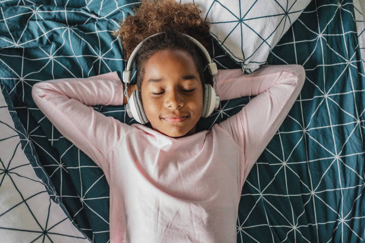

"The Crucial Role of Movement and music in early childhood education."

Introduction and Importance of Movement and Music in Early Childhood Curriculum
Movement and music are fundamental components of early childhood education, providing children with opportunities to explore, express themselves and develop creativity. These activities are not only enjoyable but also essential for physical development, coordination, rhythm and spatial awareness. Movement activities enhance motor skills, balance and body control, while music fosters memory, and emotional expression. When combined, movement and music create a rich, multisensory learning environment that nurtures creativity, cognitive growth, and social interaction.Similarly, there is no downside to bringing children and music together through fun activities.(Bright Horizons, February 25, 2022)
Resources, Materials, and Digital Technologies.
Traditional Resources and Materials:
- Musical Instruments: Drums, xylophones, and bells for hands-on exploration of sound and rhythm.
- Scarves and Ribbons: For dancing and movement activities, encouraging fluid motion and creative expression.
- Balls and Hide and seek: For the proper movement this type of games promotes physical fitness and also helps the childrens for their mental health
Digital Technologies:
- Music Streaming apps: Platforms like simule, GarageBand or spotify can help childrens for learning music, furthermore they can create and experiment with music in these apps.
- Dance and Movement Videos: Online resources like GoNoodle or Cosmic children's Yoga that guide children through structured movement activities.
- Rhyme Games: Various rhymes videos available in the social media platforms can help children learn rhyme and develop a sense of timing and rhythm.
Learning Experiences by Age Group
0-2 Years:
- Musical Sensory Play:Introducing simple instruments like shakers or small hand bells to produce sound and rhythm can help child to enjoy.
- Tummy Time with Music:Playing gentle music during tummy time to encourage movement and engagement.
- Rhythm Clapping Games: Simple clapping along to a beat to develop rhythm and coordination for the child.
2-3 Years:
- Action Songs: Songs like "Head, Shoulder, Knees, and Toes" that combine music with body movement to develop motor skills and body awareness.
- Dancing with Scarves: Encouraging free movement and expression with scarves or ribbons while music plays.
- Instrument Exploration: Providing various percussion instrument for children to experiment while creating their own rhythms.
3-5 Years:
- Movement to music: Encouraging children to move creatively to different types of music exploring how different rhythms and tempose affect their movements.
- Simple Choreography:Guiding children to create short dance routines to familiar songs promoting creativity and coordination.
- Musical Storytelling:Using instruments and movements to act out a story, combining creative expression with narrative skills.
6-8 Years:
- Group Dance Projects: Collaboratively creating a dance routine, incorporating elements of rhythm, pattern, and teamwork.
- Musical Composition:Using digital tools like Simule to create simple music compositions,exploring melody and rhythm.
- Rhythmic Gymnastics:Combining movement, music, and the use of things such as ribbons or hoops to express creativity through structured activities.
Teaching Strategies and Pedagogical Practices
- Establishing a Safe Space for Exploration: Make sure the surroundings are friendly and judgement-free so children's can feel safe attempting new things.
- Promoting Free Expression: The childrens should be allowed to move and react to music in their own way, which results in indiciduality and creativity.
- Encouraging Group Activities:This will allow children's to collaborate to make music or dance, since this will help them develop their social skills and cooperative learning.
- Offering Both Structured and Unstructured Opportunities: Strike a balance between supervised learning and ustructured play to let child explore and come up with ideas on their own time.
- Using Technology Wisely: Make sure that technology complements rather than takes away from hands-on experiences by integrating digital tools into conventional movement and music activities.
Early childhood educators can effectively use movement and music to stimulate creativity in young children, promoting their holistic development and enjoyment of the arts, by putting these resources, learning opportunities, and pedagogical techniques into practice.